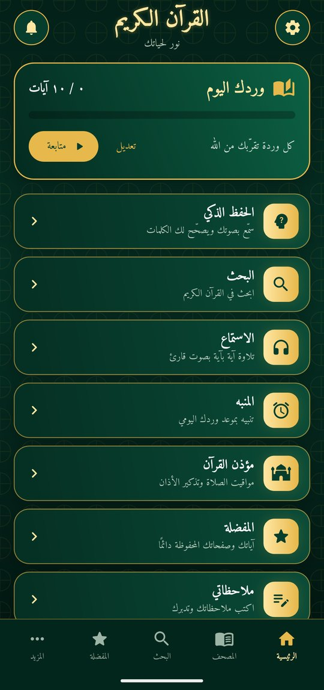
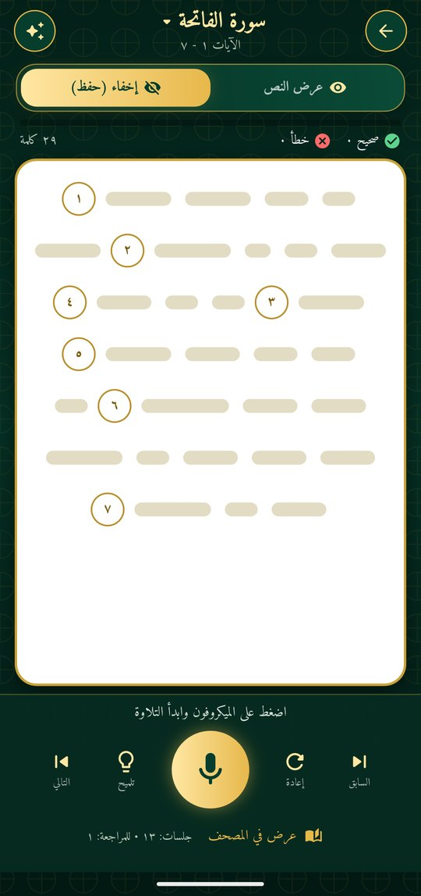
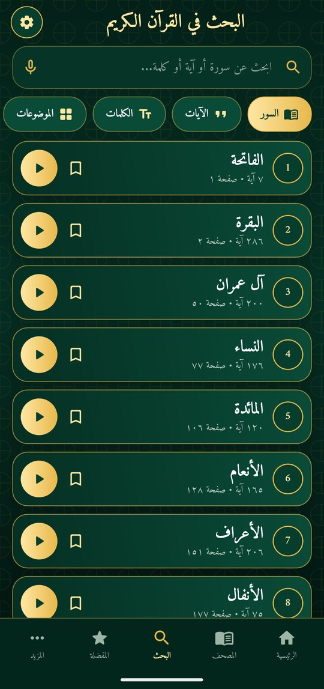
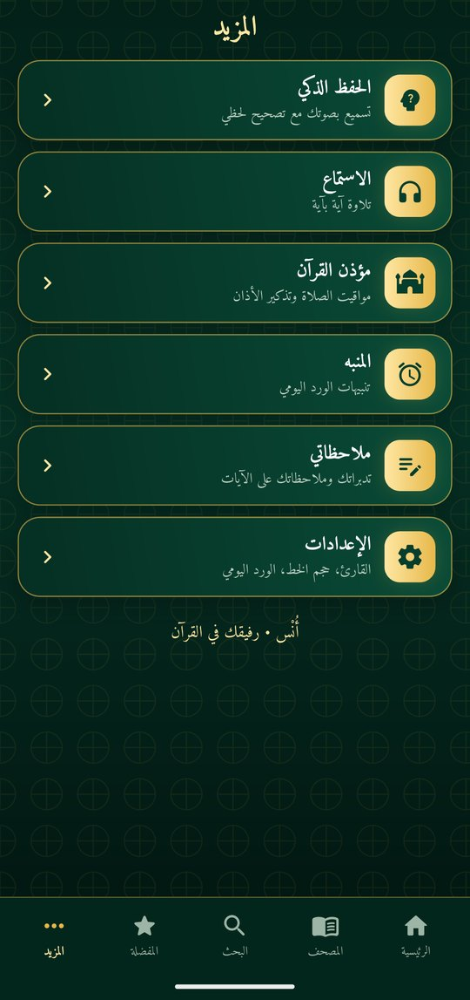

أُنْس
رفيقك في القرآن: اقرأ، استمع، وسمّع حفظك بصوتك. Your Quran companion: read, listen, and recite from memory.
أُنْس تطبيق أندرويد للقرآن الكريم: مصحف وبحث واستماع آية بآية، وحفظ ذكي يستمع لتلاوتك ويصحّح لك لحظياً، مع ورد يومي ومنبّه ومؤذن. Uns is an Android Quran app: mushaf, search and verse-by-verse listening, plus smart memorisation that hears your recitation and corrects you instantly, with a daily wird, alarm and prayer times.
لقطات من التطبيقScreenshots
من نسخة 1.0.0 على هاتف أندرويد.From version 1.0.0 on an Android phone.




ما الذي يقدّمهWhat it does
كل ما تحتاجه بين يدي القرآن، بالعربية.Everything you need around the Quran, in Arabic.
الحفظ الذكيSmart memorisation
سمّع بصوتك فيصحّح لك الكلمات لحظياً، مع إخفاء النص وتلميح وإعادة.Recite aloud and get word-by-word correction instantly, with hidden text, hints and replay.
البحث في القرآنSearch
ابحث في السور والآيات والكلمات والموضوعات، أو بالصوت.Search surahs, verses, words and topics, or by voice.
الاستماعListening
تلاوة آية بآية بصوت قارئ.Verse-by-verse recitation by a reciter.
الورد اليومي والمنبّهDaily wird & alarm
حدّد عدد آيات وردك وتابع تقدّمك، وتنبيه بموعده.Set your daily verses, track progress, and get a reminder at your time.
مؤذن القرآنPrayer times
مواقيت الصلاة وتذكير بالأذان.Prayer times with adhan reminders.
المفضلة وملاحظاتيFavourites & notes
احفظ آياتك وصفحاتك، واكتب تدبّراتك على الآيات.Save verses and pages, and write your reflections on them.
الإصدار 1.0.0Release 1.0.0
تحقّق من البصمة قبل التثبيت.Check the fingerprint before installing.
- الملفFile
- app-Uns.apk
- الحجمSize
- 57 ميجابايت57 MB
- يعمل علىRequires
- أندرويد 7.0 فأحدثAndroid 7.0 or newer
- الحزمةPackage
com.example.uns_quran- SHA-256
85d7011a516518941b8eb5f31ea513bf600fd83ec44b1371a2bf564a8eb0cad3
الصلاحيات: الميكروفون (للاستماع لتلاوتك) والإنترنت. Permissions: microphone (to hear your recitation) and internet.
التثبيت والبدءInstall & start
أربع خطوات.Four steps.
- اضغط «تنزيل لأندرويد» وافتح الملف بعد انتهاء التنزيل.Tap “Download for Android” and open the file when it finishes.
- اسمح بالتثبيت من هذا المصدر عندما يطلب الهاتف ذلك.Allow installs from this source when the phone asks.
- افتح أُنْس ووافق على إذن الميكروفون.Open Uns and grant the microphone permission.
- اختر سورة وابدأ التلاوة.Pick a surah and start reciting.